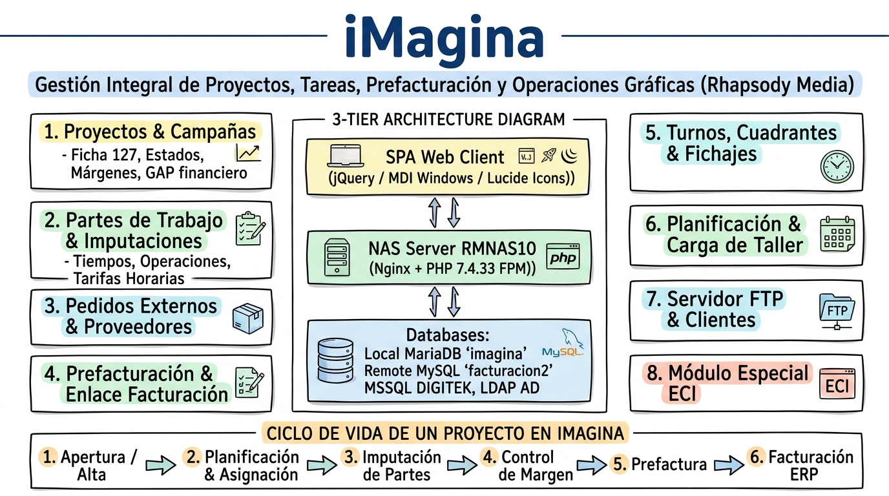

iMagina · Portal de Gestión Gráfica & Operaciones
Single Page Application (SPA MDI) de alta productividad para Rhapsody Media (Grupo Walstead). Centraliza proyectos gráficos, control de tiempos de taller, compras a proveedores externos, motor de rentabilidad reactivo en tiempo real y pasarela automatizada de facturación hacia el ERP.

Esquema de Arquitectura, Conexiones & Módulos
Topología Synology NAS, pasarela HTTP con Server B, MySQL facturacion2 en Server A y SQL Server DIGITEK.
Ampliar esquema técnicoRMNAS10), que orquesta el ciclo gráfico completo desde el presupuesto inicial hasta la facturación automatizada en el ERP de Server A y Server B.
Lámina Visual de Arquitectura (Handwritten Notes)
Representación visual de la arquitectura técnica, mapa de conexiones multi-servidor, módulos nucleares y ciclo operativo.
Topología de Infraestructura, Conexiones & Servidores
imagina y el servidor FTP Virtual de clientes.pdo_dblib para importar fichajes de entrada y salida reales en el cómputo de turnos.Módulos Funcionales Nucleares (Catálogo de Módulos)
Centro neurálgico del proyecto: edición de datos, ingresos previstos, cálculo dinámico de rentabilidad y semáforos de estado.
Control en vivo de horas por operario y sección técnica, imputando costes horarios al acumulado del proyecto.
Confección de líneas a facturar, enlace con robot interface.php en Server B y mecanismo de desfacturación segura 'Echar Atrás'.
Subcontratación técnica externa (fotomecánica, encuadernación, transporte) consolidando costes directos en tiempo real.
Cuadrantes rotativos, cálculo de bolsa de horas y conexión directa FreeTDS con los marcajes físicos de DIGITEK SQL Server.
Alta masiva de promociones y catálogos de El Corte Inglés mediante streaming OpenSpout para archivos XLSX pesados.
Administración del árbol virtual FTP en el NAS (/volume1/FTPVIRTUAL/) y gestión de credenciales aisladas por cliente.
Cierre directivo de rentabilidad mensual, gráficos de desviación y sincronización bidireccional mediante BroadcastChannel.
Pipeline Operativo & Ciclo de Vida del Proyecto Gráfico
Reglas Críticas de Negocio, Motor Financiero & Auditoría
Cálculo instantáneo de costes directos (partes + compras), margen bruto (€ / %) y semáforos visuales contra el margen objetivo fijado.
Protocolo restringido a usuarios con permiso 'D' que desvincula facturas contabilizadas para rectificaciones sin perder el asiento en el ERP.
Validación primaria en Active Directory con fallback a credenciales locales con hash seguro y doble factor TOTP QR / email.
Registro estricto de cada acción con IP, User-Agent, usuario y módulo, con autolimpieza automática del 1% a 31 días de retención.
 PHP 7.4 FastCGI
PHP 7.4 FastCGI
 Synology DSM
Synology DSM
 MariaDB Local
MariaDB Local
 MySQL Server A
MySQL Server A
 jQuery 3.7 & MDI
jQuery 3.7 & MDI
 FreeTDS DIGITEK
FreeTDS DIGITEK
 Robot HTTP Auth
Robot HTTP Auth
 OpenSpout & TCPDF
OpenSpout & TCPDF
Aspectos Técnicos Clave:
- Arquitectura SPA MDI con OPcache: Despliegue optimizado en Synology DSM con Nginx FastCGI, aceleración OPcache (2s revalidate) y gestión multi-ventana para concurrencia de gestores.
- Integración Multi-Base de Datos: Conexión simultánea a MariaDB local (charset UTF-8), MySQL remoto en Server A (MYSQLI_CLIENT_COMPRESS), MySQL rrhh en Server B y MS SQL Server vía PDO FreeTDS.
- Sincronización Reactiva Inter-Pestañas: Canal BroadcastChannel 'imagina.proyecto.sync' con fallback a localStorage para navegación fluida y foco sincronizado entre informes directivos y fichas.
- Streaming de Archivos Grandes: Ingesta de ficheros Excel de catálogos mediante streaming de memoria controlada con OpenSpout y generación de documentos PDF con TCPDF.
- Seguridad Robusta por Tokens y Sesión: Validación en cada petición AJAX del par de cookies seguras (img_id / img_token) cruzando la IP del cliente con la registrada en la base de datos.